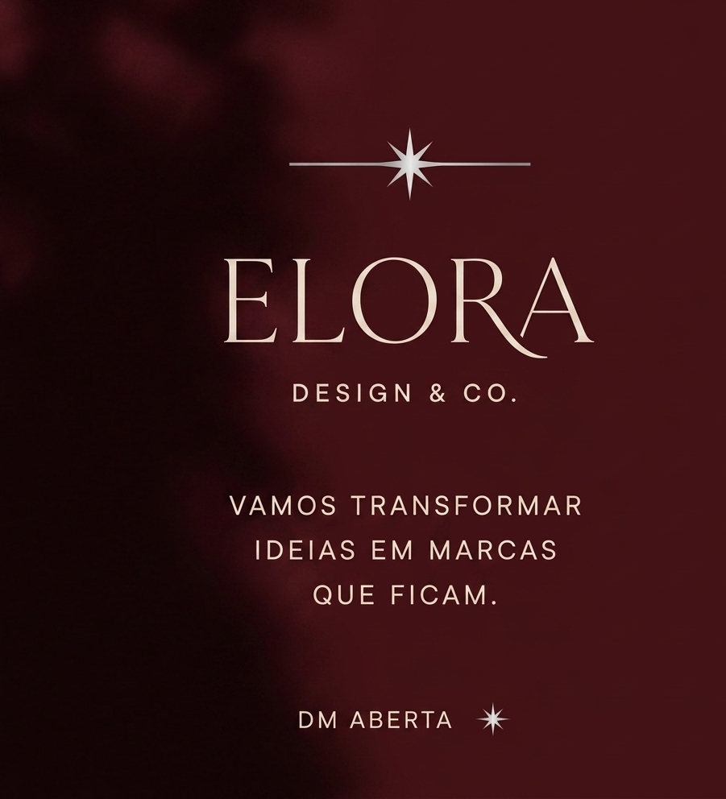
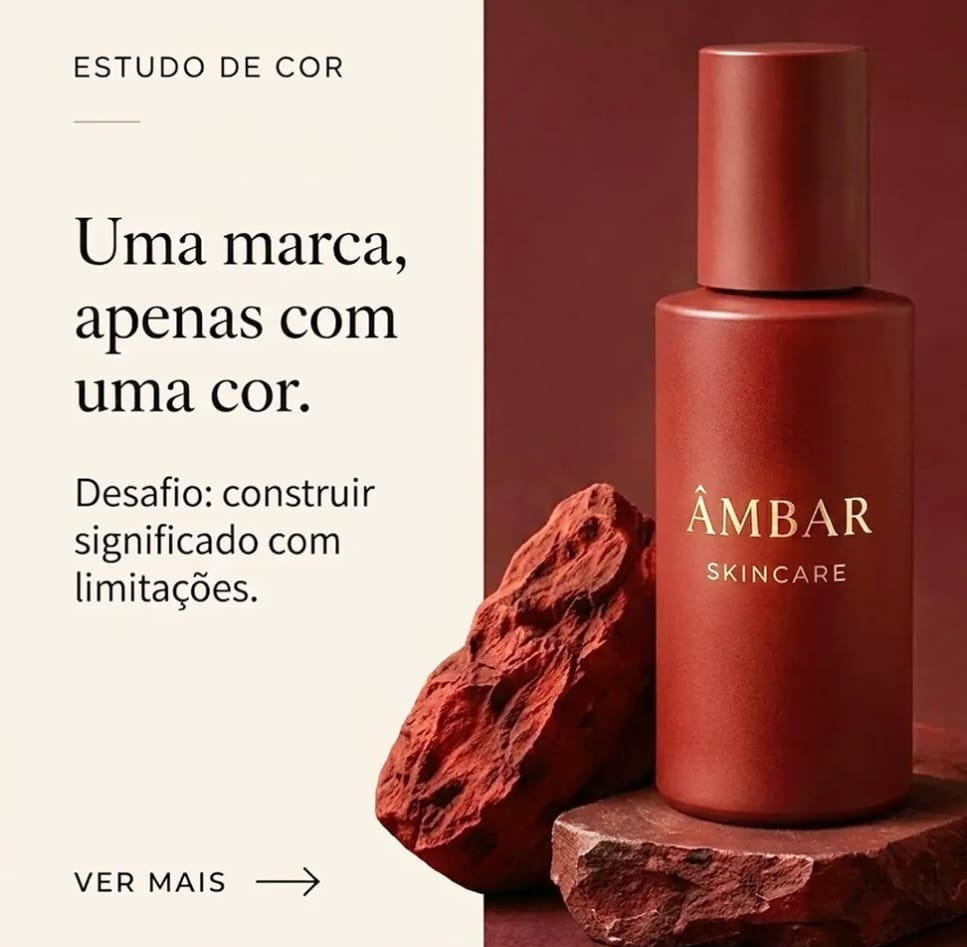
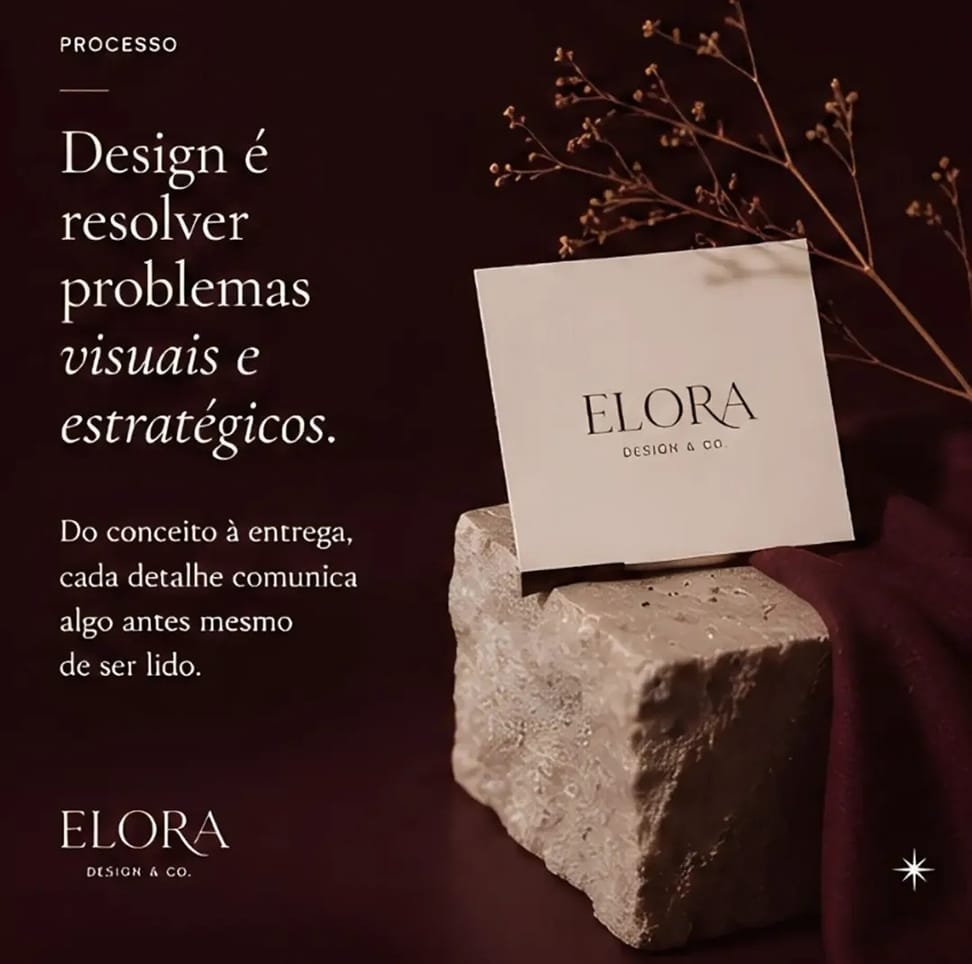
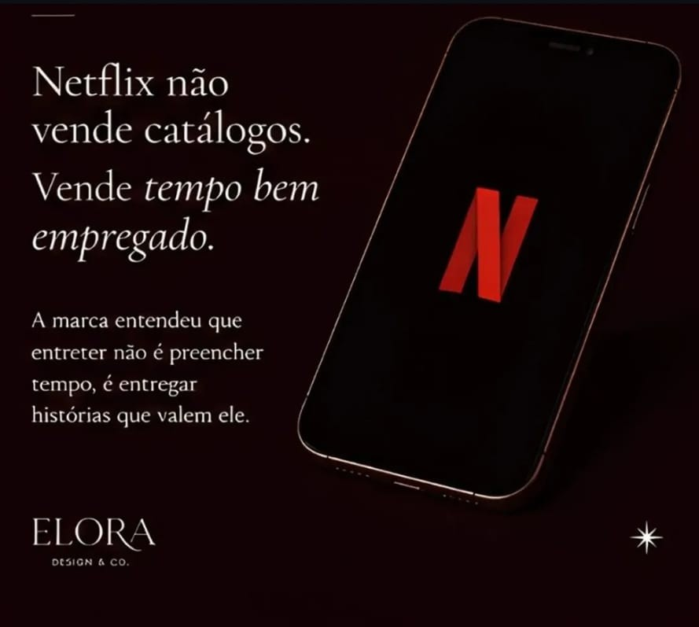

Descrição do projeto
Um conceito que ganhou forma.
A Elora nasceu como um projeto autoral, para explorar a construção de uma identidade visual e verbal do conceito à execução. O desenvolvimento reúne branding, copywriting e planejamento de conteúdo em uma proposta consistente e estratégica.
Objetivo
Criar um tom de voz autêntico e um sistema de comunicação replicável, capaz de sustentar campanhas futuras sem perder consistência e que aproximasse a marca do público de forma mais humana.
Processo criativo
O projeto começou com uma análise da identidade da marca, seus canais de comunicação e referências do mercado. A partir desse diagnóstico, foram definidos pilares de conteúdo, direcionamento visual e estratégias para tornar a comunicação mais clara, atrativa e conectada ao público. Foram desenvolvidas propostas de campanhas, organização editorial e peças de comunicação para demonstrar novas possibilidades de posicionamento e relacionamento com a audiência.




Resultados
O projeto resulta na construção de uma proposta de comunicação estratégica, demonstrando possibilidades de posicionamento, criação de conteúdo e desenvolvimento de soluções criativas para diferentes necessidades de comunicação.